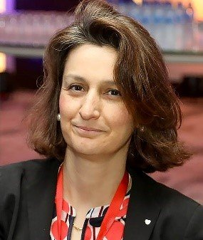
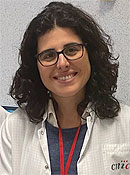
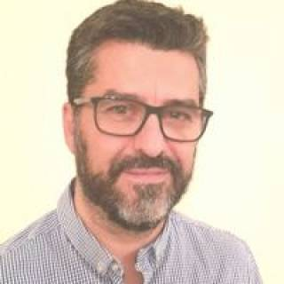
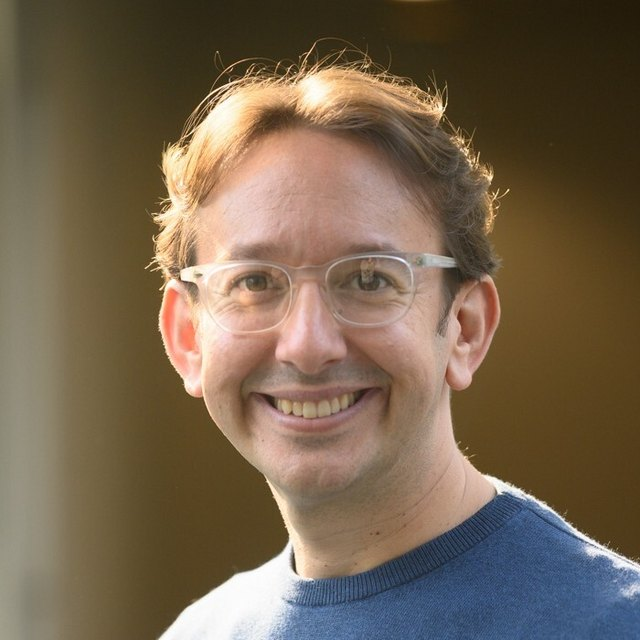
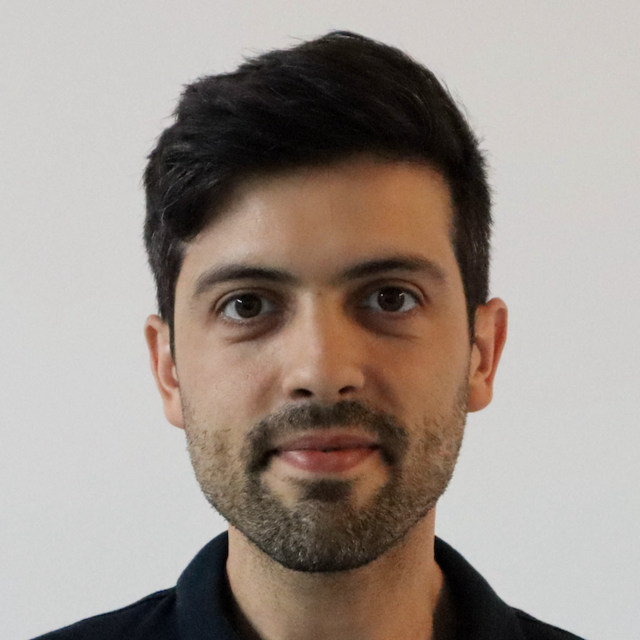
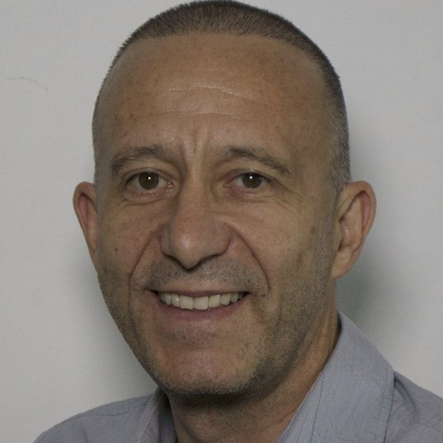
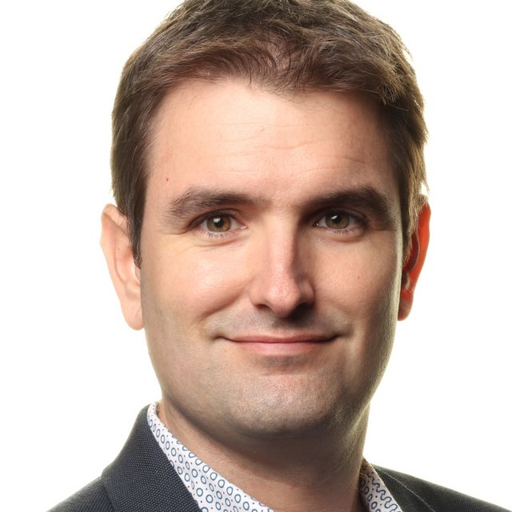
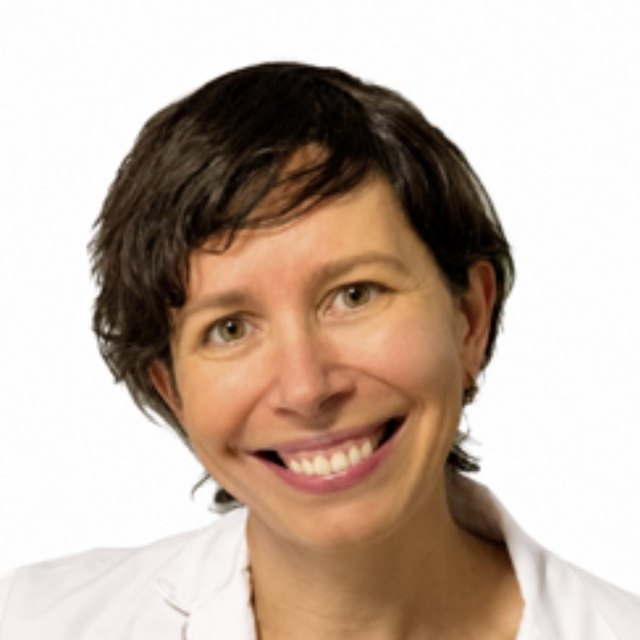
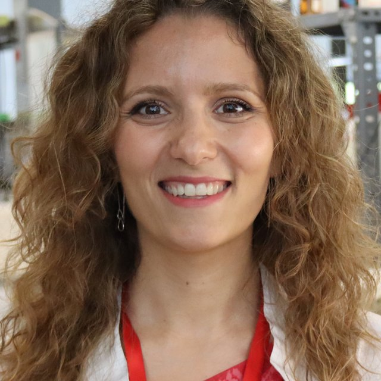
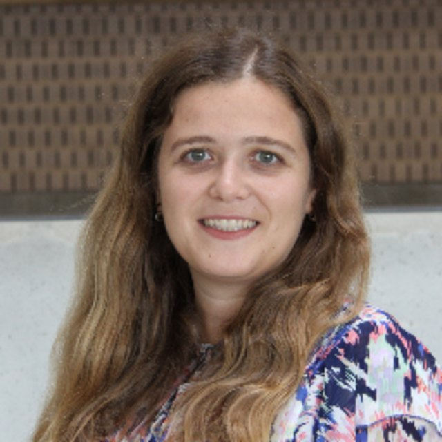

Professor of Cardiovascular Imaging · King’s College London
Professor Amedeo Chiribiri received his medical degree from the
University of Turin in 2001, completed cardiology training in
2006, and earned a PhD in Experimental Medicine and Human
Physiology in 2011. During his cardiology training, he developed
an interest in non-invasive cardiovascular imaging, including
echocardiography, cardiac computed tomography, and magnetic
resonance imaging.
He leads the Cardiac MRI Service at Guy’s and St Thomas’ NHS
Foundation Trust and is Professor of Cardiovascular Imaging at
King’s College London. He has authored or co-authored more than
300 scientific papers and several book chapters. His research
focuses on high-resolution, non-invasive quantification of
myocardial perfusion and assessment of coronary pathophysiology.

Victoria Delgado
Head of Cardiovascular Imaging · Germans Trias i Pujol
Victoria Delgado is Head of the Cardiovascular Imaging section
of the Heart Institute (iCor) at Germans Trias i Pujol University
Hospital, with a focus on multimodality imaging. She earned her
medical degree at the University of Barcelona, specialized in
cardiology at Hospital Clínic Barcelona, and completed her PhD
with cum laude at Leiden University. She worked as a senior
cardiology consultant at Leiden University Medical Center for 13
years.
She is President of the European Association of Cardiovascular
Imaging. She served as a councillor on the European Society of
Cardiology board from 2020 to 2022 and has contributed to
Society committees, including the EuroObservational Research
Programme and clinical practice guidelines. She has been Senior
Editor of Circulation and serves on the boards of
international peer-reviewed journals. She is also a Scientific
Advisory Board member of the European Cardiovascular Research
Institute and President of the Scientific Commission of the Fund
for Scientific Research (F.R.S.–FNRS).

Inés García-Lunar
Cardiologist and Group Leader · CNIC
Dr. Inés García-Lunar is a cardiologist specializing in
non-invasive cardiovascular imaging and a group leader at the
National Center for Cardiovascular Research (CNIC) in Madrid. She
leads the Cardiovascular Prevention Through Non-Invasive Imaging
group and, with Dr. Valentín Fuster, serves as clinical leader of
the scientific programme on Novel Mechanisms of Atherosclerosis.
After completing her medical and cardiology training in Spain,
she specialized in advanced cardiovascular imaging at Mount
Sinai Hospital in New York. She has more than 15 years of
experience in clinical cardiology, cardiovascular imaging, and
translational research. She heads the imaging committees of the
PESA and REACT studies. Her research uses multimodality imaging
to detect and track early subclinical atherosclerosis and
translate findings into precision cardiovascular prevention.

José Tomás Ortiz-Pérez
Consultant Cardiologist · Hospital Clínic Barcelona
José Tomás Ortiz-Pérez, MD, PhD, is a consultant cardiologist at
the Cardiovascular Institute of Hospital Clínic Barcelona and
Associate Professor of Medicine at the University of Barcelona.
Since 2008, he has worked in the hospital’s Acute Cardiovascular
Care Unit and Cardiac Imaging Unit. He earned his medical degree
at the University of Navarra, completed cardiology residency and
an interventional cardiology fellowship at Hospital Clínic, then
undertook advanced cardiovascular magnetic resonance and cardiac
computed tomography training at Northwestern University in
Chicago.
He received his PhD with highest honors from the University of
Barcelona for research on myocardial injury after acute
myocardial infarction using cardiovascular magnetic resonance.
He is Co-Director of the University of Barcelona’s Master’s
Program in Acute and Perioperative Cardiac Intensive Care and a
member of Hospital Clínic’s Amyloidosis and Multiple Myeloma
Unit. His research focuses on post-infarction ventricular
remodeling, multimodality cardiac imaging, and cardiac
amyloidosis. He has authored more than 110 peer-reviewed
publications.
Invited speakers

Andreu Climent
CEO and Co-founder · Corify Care
Andreu M. Climent, PhD, is an electronic engineer (PhD,
Universitat Politècnica de València, 2011) and the visionary
behind Corify Care, a medtech company transforming cardiac
arrhythmia treatment.
Key highlights
Clinical Impact: Successfully brought to market a non-invasive 4D real-time global cardiac mapping system, now utilized in top-tier global hospitals such as the Mayo Clinic (USA) and Charité (Berlin).
Regulatory Success: Secured both CE Mark and FDA approval for Corify Care’s core technology.
Research & Leadership: Former head of translational cardiac electrophysiology at Hospital Gregorio Marañón and deputy director of CIBERCV.
Scientific Contribution: Authored 70+ peer-reviewed papers, holds multiple patents, and leads major European-funded projects.
Awards: Named European Innovator of the Year by the European Institute of Innovation and Technology.

Pedro Correia
Assistant Researcher · University of Aveiro
Pedro Correia is an Assistant Researcher at the University of Aveiro (UA), Portugal, within the Radiation Detection and Medical Imaging (DRIM) group at i3N – Instituto de Nanoestruturas, Nanomodelação e Nanofabricação (Aveiro).
During his PhD in Physics Engineering, he developed positron emission tomography (PET) systems. His research focuses on radiation detector instrumentation, preclinical and clinical nuclear imaging systems, Monte Carlo simulation, and AI-driven image reconstruction. He is co-inventor of 3 international patents and has several collaborations with academia and industry. He has also carried out short-term stays as a visiting researcher at institutions such as CERN, the Department of Radiology at the University of California San Francisco (UCSF, USA), and the Paul Scherrer Institute (Switzerland). Through the “la Caixa” Foundation’s CaixaImpulse 2025 programme, he is working on the project “Theragamma”, which aims to develop advanced gamma radiation detectors for precision medicine and theranostics.

Lino Ferreira
Investigator Coordinator · Faculty of Medicine, University of Coimbra
Lino Ferreira is a Principal Investigator at the Faculty of Medicine of the University of Coimbra, where he founded and directs the Advanced Therapies Laboratory. He is the founder and director of the Colab4Ageing Collaborative Laboratory and the coordinator of the “Institute for Integrated Social and Biological Assessment”, a Teaming project funded by the European Community and the Portuguese Government, as well as the deputy director of CIBB, an Associate Laboratory of the University of Coimbra in the field of biomedicine.
A primary focus of his laboratory is the development of technology platforms to attenuate the effects of ageing. The laboratory aims to investigate age-related diseases, particularly those linked to the cardiovascular system, and to develop pharmacological interventions to mitigate the effects of aging. He has authored over 180 scientific publications, filed more than 25 international patents, secured over 18 million euros in competitive funding, and trained more than 30 PhD students and 20 postdoctoral researchers.

José Javier Fuster
Associate Professor and Group Leader · CNIC
José Javier Fuster, PhD, is an Associate Professor and Group Leader of the Hematovascular Pathophysiology Laboratory at the Spanish National Center for Cardiovascular Research (CNIC) in Madrid, where he also serves as Coordinator of the Scientific Program on Novel Mechanisms of Atherosclerosis. Prior to joining CNIC, he conducted postdoctoral research at Boston University and held faculty appointments at Boston University and the University of Virginia.
His research focuses on the interplay between the hematopoietic and cardiovascular systems in cardiovascular disease, with particular emphasis on the pathophysiology of atherosclerosis. Dr. Fuster leads an interdisciplinary research program that combines the analysis of biological samples from deeply phenotyped human cohorts with mechanistic studies in advanced mouse models. He also holds major scientific roles in two flagship CNIC-led population-imaging studies, the PESA and REACT studies, with leadership roles in systems biology and genetics.
He is internationally recognized for his pioneering work on age-related clonal hematopoiesis and its contribution to cardiovascular disease, helping establish this field as a major area of investigation in cardiovascular medicine. His work has been published in leading scientific journals, including Nature, Science, Nature Medicine, European Heart Journal, Journal of the American College of Cardiology, Cell Metabolism and Nature Cardiovascular Research, among others. He has received several distinctions, including Young Investigator Awards from the European Atherosclerosis Society and the European Society for Clinical Investigation and the European Society of Cardiology Outstanding Achievement Award.

Ana García-Álvarez
Head of Cardiology · Hospital Clínic Barcelona · University of Barcelona
Dr. Ana García-Álvarez (MD, PhD) is Head of the Cardiology Department at Hospital Clínic de Barcelona, where she also leads the Familial Cardiomyopathy Unit, and Associate Professor and Vice-Dean of the Faculty of Medicine and Health Sciences at the University of Barcelona. She completed her Cardiology residency at Hospital Clínic and obtained her PhD cum laude at the University of Barcelona. She further specialized in advanced cardiovascular imaging at Mount Sinai Hospital in New York and in biostatistics and epidemiology at the Johns Hopkins Bloomberg School of Public Health.
She is group leader at IDIBAPS and at the National Center for Cardiovascular Research (CNIC), where her translational research focuses on pulmonary hypertension, right ventricular dysfunction and inherited cardiac diseases, from experimental models to multicenter clinical trials. She has published over 120 articles in first-quartile journals and has been principal investigator of multiple competitive research projects. She is a nucleus member of the ESC Working Group on Pulmonary Circulation and Right Ventricular Function and an evaluator for international funding agencies.

Annalaura Mastrangelo
Researcher · CNIC, Madrid
Annalaura Mastrangelo, PharmD, PhD, is a researcher at the Spanish National Center for Cardiovascular Research (CNIC) in Madrid, Spain. Her work focuses on understanding how microbial metabolism influences cardiovascular and cardiometabolic diseases through the integration of metabolomics, multi-omics technologies, computational analyses, human cohort studies, and animal models.
Her research has led to the identification of microbiota-derived metabolites involved in the development of atherosclerosis and other chronic diseases, opening new opportunities for early diagnosis and therapeutic intervention. She is particularly interested in translating mechanistic discoveries into clinically relevant biomarkers and therapeutic strategies, while also promoting rigorous and reproducible research practices and the development of open computational tools for biomedical data analysis.

Andreia Pereira
PhD Researcher · i3S, Porto
Andreia Pereira is a PhD researcher at i3S – Instituto de Investigação e Inovação em Saúde, Porto, where she leads multidisciplinary projects at the intersection of biomaterials, biointerfaces and self-powered sensing. Her research focuses on developing biomaterials for cardiovascular applications, including vascular grafts, stents and cardiac patches, using non-fouling surface strategies and tissue engineering approaches.
A key focus is the development of smart vascular grafts that combine improved blood compatibility with autonomous monitoring for the early detection of complications. Her goal is to translate interface science into clinically relevant solutions for safer and more personalized cardiovascular care.
Practical & hands-on faculty
Catarina Águas
Radiology Resident · ULS Algarve, Faro
Catarina Águas, MD, PhD, is a radiology resident at ULS Algarve, Faro, with a particular interest in cardiovascular imaging, especially cardiac CT and MRI. Over the past few years, she has devoted particular attention to this field, further developing her experience in clinical practice.